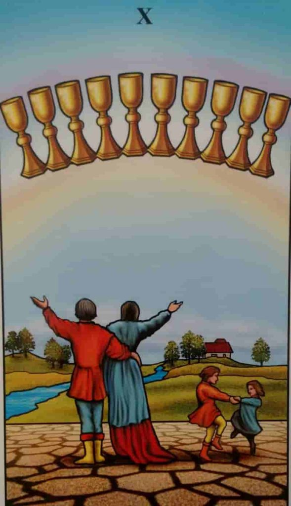

O Dez de Copas é uma carta do Tarô que simboliza a abundância emocional, o amor e a conexão com os outros. Ele representa a realização de desejos sentimentais e a importância de cultivar relações saudáveis. O Dez de Copas também pode indicar um período de gratidão e contentamento, onde a pessoa se sente amada e apreciada por aqueles ao seu redor.